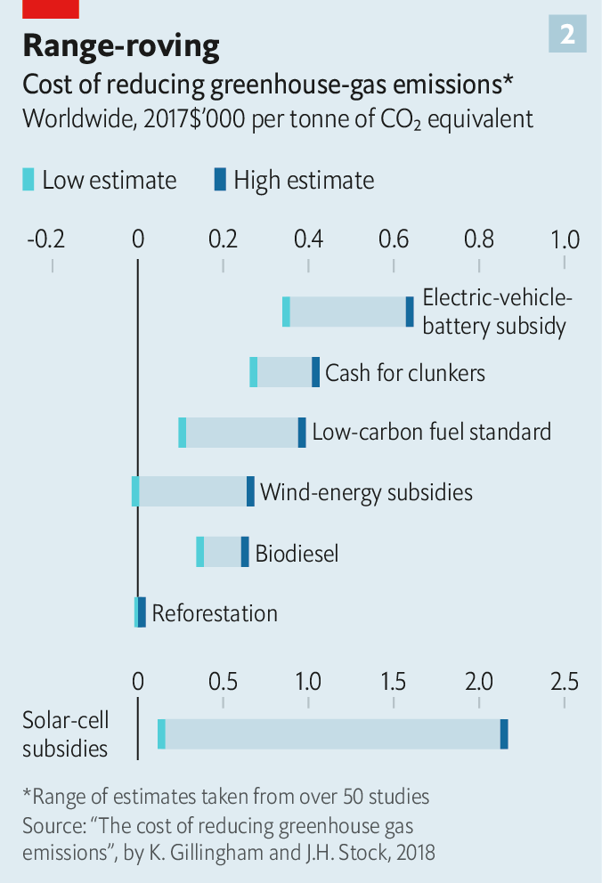
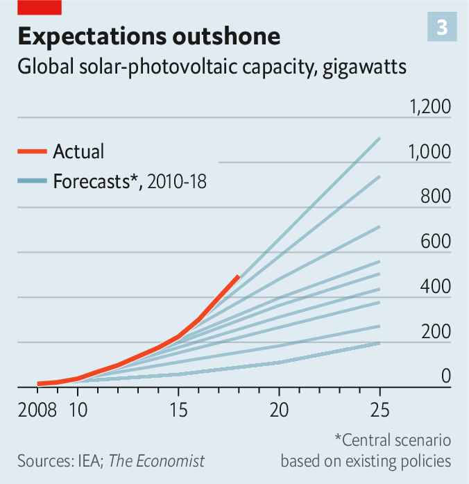

Text
2021-03-31T12:43:46+00:00
Carbon abatement
碳减排
碳減排
Giving up carbs
弃碳
棄碳
What are cheap ways to cut carbon? Bill Gates is the latest to ask the question
有哪些廉价的减碳方式？提问的人又多了个比尔·盖茨
有哪些廉價的減碳方式？提問的人又多了個比爾·蓋茨
IN THE TRENDIER parts of Berlin, cargo bikes are the rage. Locals use the bicycles, which have a wheelbarrow-sized box at the front, to do the weekly shop or ferry children around. Because they cut carbon-dioxide emissions, local authorities are subsidising the craze. But the well-intentioned schemes look pricey when you consider how much carbon is abated. One such scheme costs the city €370,000 ($450,000), but is expected to reduce emissions by only seven tonnes a year. That works out at over €50,000 per tonne abated. The equivalent figure for schemes that support the sale of low-carbon heating systems, by contrast, is €200 per tonne.
在柏林比较时尚的地方，载货自行车十分流行。它前面有一个手推车大小的车斗，当地人骑它做每周的采购或接送孩子。这些单车减少了二氧化碳排放，所以地方政府正提供补贴来支持这股热潮。但是，如果细究具体减排了多少，这些意图很好的计划看起来就很昂贵了。柏林为其中一项计划花费了37万英镑（45万美元），但预计每年仅减排七吨，相当于每吨成本超过五万欧元。相比之下，那些支持销售低碳供暖系统的计划每吨成本200欧元。
在柏林比較時尚的地方，載貨自行車十分流行。它前面有一個手推車大小的車斗，當地人騎它做每周的採購或接送孩子。這些單車減少了二氧化碳排放，所以地方政府正提供補貼來支持這股熱潮。但是，如果細究具體減排了多少，這些意圖很好的計劃看起來就很昂貴了。柏林為其中一項計劃花費了37萬英鎊（45萬美元），但預計每年僅減排七噸，相當於每噸成本超過五萬歐元。相比之下，那些支持銷售低碳供暖系統的計劃每噸成本200歐元。
More than 100 countries and 400 cities (including Berlin) have promised to get to net-zero emissions by 2050 or before. Investors and regulators are encouraging companies to do the same. To meet these goals policymakers and bosses will have to pick from a menu of policies, from building wind farms to subsidising low-carbon jet fuel. That raises an important question: what is the cheapest way to cut carbon?
已有100多个国家和400个城市（包括柏林）承诺在2050年或之前实现净零排放。投资者和监管机构正在鼓励企业也这样做。要实现这样的目标，政策制定者和老板们将必须在从建设风力发电场到补贴低碳飞机燃料的一系列政策中做选择。这就引出了一个重要的问题：最便宜的减排方式是什么？
已有100多個國家和400個城市（包括柏林）承諾在2050年或之前實現凈零排放。投資者和監管機構正在鼓勵企業也這樣做。要實現這樣的目標，政策制定者和老闆們將必須在從建設風力發電場到補貼低碳飛機燃料的一系列政策中做選擇。這就引出了一個重要的問題：最便宜的減排方式是什麼？
One way to discern the answer is to impose a price on carbon, either as a tax or a cap-and-trade scheme. This would encourage firms and consumers to find the cheapest ways to abate. But setting a price is difficult politically. Only a fifth of the world’s emissions are covered by an explicit price. Even in Europe, the world’s biggest liquid carbon market, free credits still allow many industries to maintain emissions.
要找出答案，一种方法是给碳定价，或者通过征税，或者通过限额交易计划。这会鼓励企业和消费者寻找最便宜的减排方法。但是给碳定价在政治上是个难题。世界总排放量中只有五分之一被一个明确的价格覆盖。即使在欧洲这个世界上最大的高流动性碳市场，仍有许多行业凭借免费碳信用额度继续排放。
要找出答案，一種方法是給碳定價，或者通過徵稅，或者通過限額交易計劃。這會鼓勵企業和消費者尋找最便宜的減排方法。但是給碳定價在政治上是個難題。世界總排放量中只有五分之一被一個明確的價格覆蓋。即使在歐洲這個世界上最大的高流動性碳市場，仍有許多行業憑藉免費碳信用額度繼續排放。
So other tools are needed, too. In his new book, “How to Avoid a Climate Disaster”, Bill Gates suggests using a “green premium”, or the gap between the price of clean activities and dirty ones, as a guide. Where the premium is low, zero-carbon alternatives exist, and consumers have no reason not to use them. Where the premium is high, more innovation is needed.
因此还需要其他手段。盖茨在他的新书《如何避免气候灾难》（How to Avoid a Climate Disaster）中建议使用“绿色溢价”，也就是清洁活动和污染活动之间的价差作指引。绿色溢价低的地方有零碳替代品，消费者没有理由不用。而溢价高的地方就需要更多创新。
因此還需要其他手段。蓋茨在他的新書《如何避免氣候災難》（How to Avoid a Climate Disaster）中建議使用“綠色溢價”，也就是清潔活動和污染活動之間的價差作指引。綠色溢價低的地方有零碳替代品，消費者沒有理由不用。而溢價高的地方就需要更多創新。
A similar approach, popular in climate circles for the past decade or so, is to consider the marginal costs of abatement. Like green premiums, these compute the costs of a climate intervention (including operating costs and upfront spending). But it compares them with the emissions that the policy is expected to abate. Plotting the costs and emissions abated on a curve shows the policies that provide the most bang for the buck (see chart 1).
过去十年左右的时间里，气候学界流行一种类似的方法：考虑减排的边际成本。和绿色溢价一样，这种方法计算某项气候干预措施的成本（包括运营成本和前期支出）。但它会将这些成本与该政策预计能达到的减排量相比较。将成本和减排量绘制在一条曲线上，就可以看出哪些政策最划算（见图表1）
過去十年左右的時間裡，氣候學界流行一種類似的方法：考慮減排的邊際成本。和綠色溢價一樣，這種方法計算某項氣候干預措施的成本（包括運營成本和前期支出）。但它會將這些成本與該政策預計能達到的減排量相比較。將成本和減排量繪製在一條曲線上，就可以看出哪些政策最划算（見圖表1）


Such curves have been computed by a number of forecasters over the years, including McKinsey and the Boston Consulting Group, two consultancies; Goldman Sachs, a bank; and Britain’s Climate Change Commission, which advises Parliament. As a rule, most show that the biggest bang comes from making buildings more energy-efficient, say by installing insulation or smart cooling and heating systems. Often these have negative costs: analysts think they will eventually save consumers money through cheaper bills.
这类曲线由一些预测机构历经数年计算得出，它们包括咨询公司麦肯锡和波士顿咨询集团、高盛银行，还有向议会提供建议的英国气候变化委员会。一般说来，这些曲线大多数都表明最划得来的做法是提高建筑的能效，比如安装隔热材料或智能制冷和供热系统。这些方法的成本通常为负：分析师认为它们最终会通过让消费者少交费来帮他们省钱。
這類曲線由一些預測機構歷經數年計算得出，它們包括諮詢公司麥肯錫和波士頓諮詢集團、高盛銀行，還有向議會提供建議的英國氣候變化委員會。一般說來，這些曲線大多數都表明最划得來的做法是提高建築的能效，比如安裝隔熱材料或智能製冷和供熱系統。這些方法的成本通常為負：分析師認為它們最終會通過讓消費者少交費來幫他們省錢。
The next-best bang for the buck tends to be replacing power plants that burn natural gas or coal with renewable-powered ones. There is less agreement about what the next-best option is after that. But the most expensive areas of the economy to decarbonise tend to be transport (planes and ships), heavy industry (steel and cement) and agriculture (cows belching methane). In these cases clean, cheap, scalable alternatives do not yet exist.
第二划算的方法通常是用可再生能源发电厂取代燃烧天然气或煤的发电厂。至于哪种方法排在第三位，意见就没那么统一了。但是脱碳成本最高的经济部门一般是运输（飞机和轮船）、重工业（钢铁和水泥）和农业（排放甲烷的奶牛）。在这些领域内，清洁、廉价且可扩展的替代品尚不存在。
第二划算的方法通常是用可再生能源發電廠取代燃燒天然氣或煤的發電廠。至於哪種方法排在第三位，意見就沒那麼統一了。但是脫碳成本最高的經濟部門一般是運輸（飛機和輪船）、重工業（鋼鐵和水泥）和農業（排放甲烷的奶牛）。在這些領域內，清潔、廉價且可擴展的替代品尚不存在。
Just as abatement-cost curves provide a rough guide for policymakers, they also show how difficult the maths is. Estimates of costs vary widely, for instance (see chart 2). A paper by Kenneth Gillingham of Yale University and James Stock of Harvard University compares the marginal costs of policies across 50-odd studies. The cost of wind-energy subsidies can range from more than $260 per tonne of carbon dioxide avoided, to next to nothing.
减排成本曲线为政策制定者提供了一个粗略的指南，同时也显示了要算清这笔账有多难。例如，不同的研究对成本的估算相差很大（见图表2）。耶鲁大学的肯尼斯·吉林厄姆（Kenneth Gillingham）和哈佛大学的詹姆斯·斯托克（James Stock）的一篇论文比较了50多项研究中探讨的政策的边际成本。风能补贴减排成本高则超过每吨260美元，低则几乎为零。
減排成本曲線為政策制定者提供了一個粗略的指南，同時也顯示了要算清這筆賬有多難。例如，不同的研究對成本的估算相差很大（見圖表2）。耶魯大學的肯尼斯·吉林厄姆（Kenneth Gillingham）和哈佛大學的詹姆斯·斯托克（James Stock）的一篇論文比較了50多項研究中探討的政策的邊際成本。風能補貼減排成本高則超過每噸260美元，低則幾乎為零。
This is partly because a technology’s abatement potential can vary from place to place. Some countries, such as Britain, are blessed with high winds and shallow seas that are ideal for offshore wind farms. In other places, wind energy will provide scant abatement.
这在一定程度上是因为一项技术的减排潜力可能因地而异。一些国家如英国拥有强风和浅海，非常适合建设海上风电场。而在其他地方，风能带来的减排量很少。
這在一定程度上是因為一項技術的減排潛力可能因地而異。一些國家如英國擁有強風和淺海，非常適合建設海上風電場。而在其他地方，風能帶來的減排量很少。
Working out costs is tricky, too. The International Energy Agency (IEA), for instance, has routinely underestimated the pace of deployment of renewables (see chart 3). And because economies of scale drive down prices, that means it has overestimated the costs of switching, too. In 2010 the lowest the IEA expected solar prices to drop to over the next decade was about $195 per megawatt hour. Today the price in America and Europe is $30-60.
成本的计算也很棘手。例如，国际能源署（IEA）一再地低估可再生能源的部署速度（见图3）。而由于规模经济压低了价格，IEA也就高估了转换成本。它曾在2010年预计，之后十年太阳能的价格最低将降至每兆瓦时195美元左右。而如今，这个价格在美国和欧洲是30到60美元。
成本的計算也很棘手。例如，國際能源署（IEA）一再地低估可再生能源的部署速度（見圖3）。而由於規模經濟壓低了價格，IEA也就高估了轉換成本。它曾在2010年預計，之後十年太陽能的價格最低將降至每兆瓦時195美元左右。而如今，這個價格在美國和歐洲是30到60美元。
Nor do abatement-cost curves show how technologies interact. Hydrogen is rarely produced without emissions. But if it were, the Hydrogen Council reckons, it could be used in 35 different green applications, from storing energy to heating buildings. Ignoring this could lead to underinvestment in hydrogen power today.
减排成本曲线也未能体现不同技术之间的相互作用。氢能的生产很少不产生碳排放。但国际氢能委员会（Hydrogen Council）认为，就算造成了排放，氢能也可被用在从储存能量到为建筑供暖的35种不同的绿色应用中。忽视这一点可能导致在当下对氢能投资不足。
減排成本曲線也未能體現不同技術之間的相互作用。氫能的生產很少不產生碳排放。但國際氫能委員會（Hydrogen Council）認為，就算造成了排放，氫能也可被用在從儲存能量到為建築供暖的35種不同的綠色應用中。忽視這一點可能導致在當下對氫能投資不足。
Interactions also affect how much interventions reduce emissions. Consider two things needed to decarbonise the economy: converting the grid to low-carbon power, and electrifying transport. The order in which you do these matters. According to a model developed by the Massachusetts Institute of Technology and others, if transport were electrified, there would be less demand for oil to fill tanks with petrol. Yet, as the demand for dirty power for electricity would surge, overall emissions would drop by only 2% by 2050 (compared with a business-as-usual baseline). If the grid were cleaned up first, though, then emissions would fall by about 30%.
技术的相互作用也会影响干预措施的减排程度。来看让经济脱碳需要做的两件事：改造电网向低碳电力转型，以及交通电气化。做这两件事的先后顺序很重要。麻省理工学院和其他机构开发的一个模型显示，如果先让交通实现电气化，车辆对汽油的需求会减少。然而，由于对污染电力的需求会激增，到2050年总排放量将仅下降2%（与一切照旧的基线相比）。但如果是先清洁电网，那么排放量将下降30%左右。
技術的相互作用也會影響干預措施的減排程度。來看讓經濟脫碳需要做的兩件事：改造電網向低碳電力轉型，以及交通電氣化。做這兩件事的先後順序很重要。麻省理工學院和其他機構開發的一個模型顯示，如果先讓交通實現電氣化，車輛對汽油的需求會減少。然而，由於對污染電力的需求會激增，到2050年總排放量將僅下降2%（與一切照舊的基線相比）。但如果是先清潔電網，那麼排放量將下降30%左右。
Faced with all these difficulties, forecasters are taking a more sophisticated approach, rather than simply working their way along the marginal-cost curve. Goldman Sachs is incorporating different scenarios and a wider range of costs into its analysis. Others are turning to “energy-systems” modelling, which estimates models over and over again with different assumptions. That lets technologies interact, and means that forecasts rely less on one set of assumptions for, say, prices.
面对上述种种难题，预测机构正采取一种更复杂精密的方法，而不只是简单地在边际成本曲线上做文章。高盛正在将不同的情景和更广泛的成本纳入自己的分析中。其他机构则转向“能源系统”建模，用不同的假设一遍又一遍地评估模型。如此便可将不同技术的相互作用考虑进来，在预测时也就能减少对单单一组假设（如价格）的依赖。
面對上述種種難題，預測機構正採取一種更複雜精密的方法，而不只是簡單地在邊際成本曲線上做文章。高盛正在將不同的情景和更廣泛的成本納入自己的分析中。其他機構則轉向“能源系統”建模，用不同的假設一遍又一遍地評估模型。如此便可將不同技術的相互作用考慮進來，在預測時也就能減少對單單一組假設（如價格）的依賴。
This type of analysis lets you sort climate actions into three categories, says Jesse Jenkins of Princeton University, all of which require funding. The first are what he calls “robust” interventions, such as improving energy efficiency, which are valuable across lots of scenarios. Next come “shaping” interventions, such as investing in hydrogen and batteries, which improve the likelihood of arriving at a low-carbon future. Then come “hedging” strategies: long-shot options to develop, just in case, such as direct-air-capture, which sucks carbon dioxide from the atmosphere. The result is a more complex framework better suited to deal with the complex, ever more urgent task of decarbonisation. ■
普林斯顿大学的杰西·詹金斯（Jesse Jenkins）说，借由这种类型的分析，可以将气候行动整理为三类，每一类都需要资金。第一类是他所谓的“稳健型”干预，如提高能源效率，这类干预在许多情景下都是有价值的。然后是“塑造型”干预，如投资于氢能和电池，可提高实现低碳未来的可能性。接着是“对冲”策略，即风险很高的方案，例如研发从大气中吸收二氧化碳的直接空气捕捉技术，以备不时之需。由此便得出了一个更复杂的框架，更适合于应对复杂且日趋紧迫的脱碳重任。
普林斯頓大學的傑西·詹金斯（Jesse Jenkins）說，藉由這種類型的分析，可以將氣候行動整理為三類，每一類都需要資金。第一類是他所謂的“穩健型”干預，如提高能源效率，這類干預在許多情景下都是有價值的。然後是“塑造型”干預，如投資於氫能和電池，可提高實現低碳未來的可能性。接着是“對沖”策略，即風險很高的方案，例如研發從大氣中吸收二氧化碳的直接空氣捕捉技術，以備不時之需。由此便得出了一個更複雜的框架，更適合於應對複雜且日趨緊迫的脫碳重任。